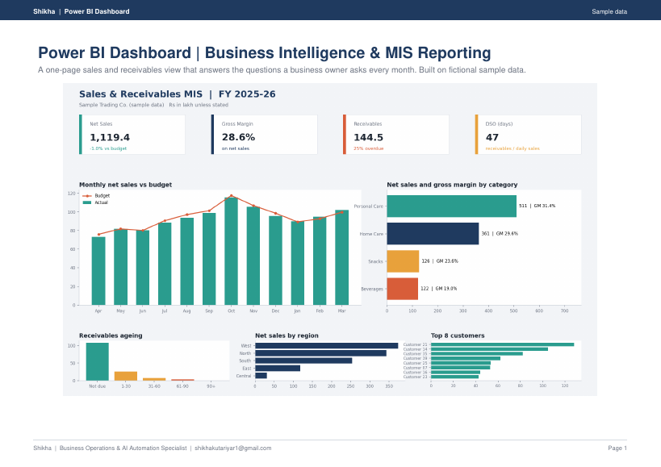
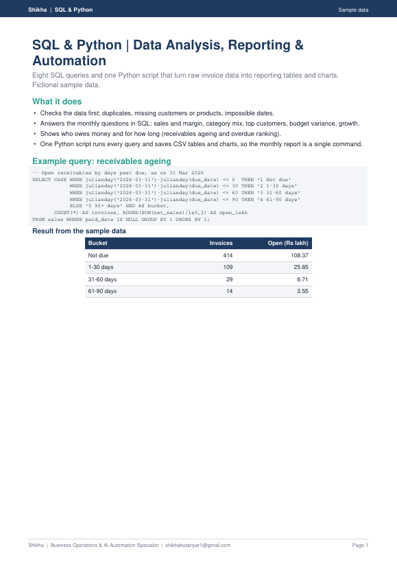
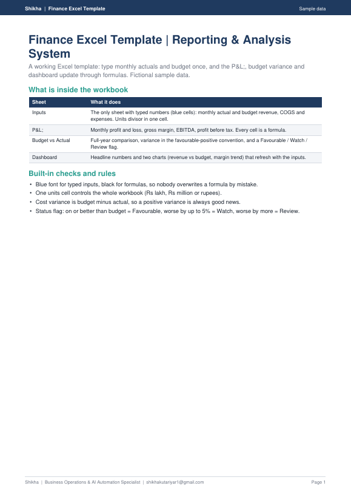
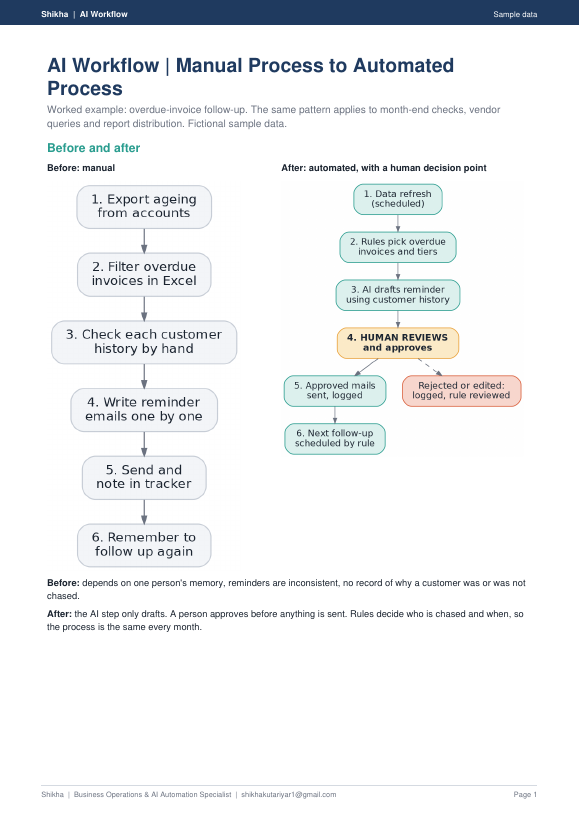
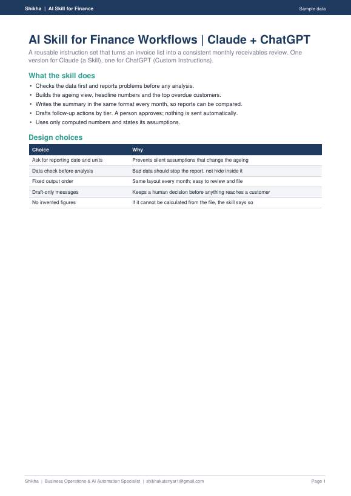
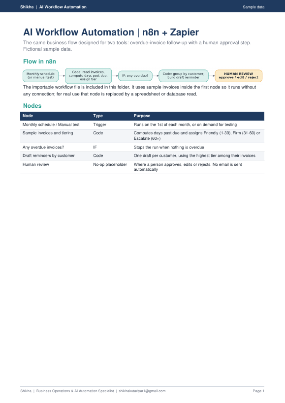
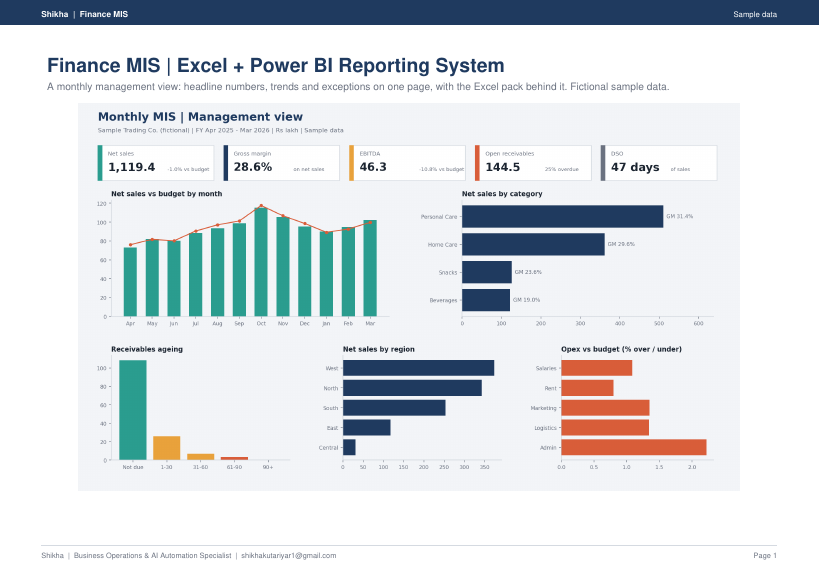
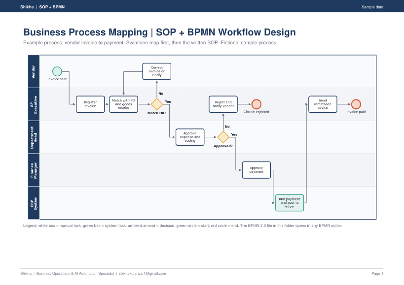

Finance-aware technology, AI, data and process: AI strategy, workflow design and practical AI implementation. Shikha understands the finance problem first, then builds the Power BI dashboards, SQL and Python reporting, Excel templates, AI workflows and written processes that make it repeatable.
Every sample below is built on a fictional company with invented data, so you can see the structure and quality of the work. Your own version is built on your data, with your rules.

A one-page dashboard that shows sales, margin, budget variance and receivables ageing on one screen, with the DAX measures behind it.
What you get: Dashboard design and data model · DAX measures · KPI cards, trends and ageing views
View worked sample (PDF) →
SQL queries and a Python script that check the data, build the reporting tables and charts, and run the monthly report without manual steps.
What you get: Data-quality checks · Reporting queries · Automated monthly report and charts
View worked sample (PDF) →
A finance workbook with inputs, P&L, budget vs actual, variance flags and charts. Type once and every sheet updates by formula.
What you get: Input sheet and checks · P&L and budget vs actual · Variance flags and charts
View worked sample (PDF) →
A manual follow-up process redesigned as an automated one, with clear rules, an AI draft and a human approval step.
What you get: Process before and after · Rules and exceptions · AI draft with human review
View worked sample (PDF) →
A reusable skill that reviews an invoice list and writes a monthly receivables summary, with an example run.
What you get: Skill instructions · ChatGPT custom instructions · Worked example
View worked sample (PDF) →
The overdue-invoice follow-up designed in n8n and Zapier, with an importable n8n file and a human review step.
What you get: n8n workflow file · Zapier version · Review and approval step
View worked sample (PDF) →
A monthly management view: sales, margin, expenses vs budget, receivables ageing and top customers, in an Excel pack with a Power BI layout.
What you get: Management one-pager · Supporting tables · Monthly refresh steps
View worked sample (PDF) →
A swimlane map, a BPMN file and a written SOP for vendor invoice to payment, with roles, controls and exceptions.
What you get: Swimlane process map · BPMN file · Written SOP with controls
View worked sample (PDF) →Technology is not the starting point. The business problem is. Finance defines what needs to be solved. Data and technology make the solution repeatable.
The order is Problem → Process → Data → Technology → Automation. Power BI, Python, n8n or Zapier come in only where they fit the problem.
Repetitive analysis · data preparation · classification · alerts · workflow triggers · first drafts
Judgement · materiality · business context · financial interpretation · final decisions
Where a problem needs deeper finance interpretation, Shikha works with Suraj on the finance architecture before building. Where a finance diagnosis needs systemising, reporting or automation, Suraj hands it to Shikha to build.
Suraj and Shikha agree what the business needs to see, the rules and the checks.
Shikha builds the dashboard, template, query, workflow or process document.
You get the file, the written steps and a review. A person stays in charge of what matters.
Contact Shikha: shikhakutariyar1@gmail.com · WhatsApp +91-7011283542
Leave your details — we reply within one business day.
No spam. Prefer WhatsApp? DM "MORNING" to +91-7011283542.
Know a founder who needs this? Send them a Fin-vite — that's how most conversations here start.